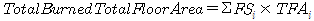

2017년 11월 발생한 규모 5.4의 포항지진에서 대규모 건축물의 피해와 인명피해가 발생하였으며, 또한 행정안전부(2018)의 보고자료에 따르면 5건의 출화가 발생하여 지진 발생 후 대규모 화재 발생의 가능성을 보여주었다. 미국 연방재난관리청(Federal Emergency Management Agency, FEMA) HAZUS–MH의 보고서(2020)에 지진 발생 이후 수반되는 2차 피해 중 가장 많은 피해를 초래하는 것이 지진화재라고 명시되어 있다. 이를 대비하기 위해 미국, 일본 등 지진 관련 선진기술을 보유한 국가는 실제 데이터를 기반으로 지진화재위험도에 대한 평가방법론을 개발하여 보유하고 있다. 하지만, 국내의 지진위험도 평가방법의 경우, 지진화재 등의 2차 피해에 대해 고려할 수 있는 방법론은 현재까지 존재하지 않는다.
본 평가방법론의 목적은 건축물 공공 데이터베이스(건축물대장)의 정보를 활용하여 지역 단위의 지진발생 후 화재위험도를 평가하기 위함이다. 본 평가방법론은 총 3개의 평가 기법(예비평가, 정적평가, 동적평가)으로 구성되어 있으며, 단계별 화재위험도 등급에 따라 평가방법을 적용한다. 여기서 ‘예비평가’법은 간단한 건축물대장 정보만으로 신속하게 법정동 단위의 화재 위험 등급을 산정한다. ‘정적평가’ 방법은 건축물대장 정보를 통하여 결정된 내화특성을 기반으로 구성된 클러스터 구성 후, 화재위험도 등급을 산정한다. ‘동적평가’법은 도시 단위의 화재 시뮬레이션을 의미한다. 본 매뉴얼은 각 평가방법론의 정보변화, 화재평가 절차 등을 상세히 명시하고 있으며, 관련한 정보를 활용한 예비평가 방법의 적용 절차, 검증 예시 등을 포함하고 있다.
용어 정의
본 평가요령에 사용되는 주요 용어의 정의는 아래와 같다.
용어명
설명
내화구조
건축물의 구조부가 화재 시 일정 시간(1시간~3시간) 동안 구조적으로 유해한 변형 없이 견딜 수 있는 성능을 가진 철근콘크리트조 또는 철골 철근콘크리트조 등의 구조
준내화구조
내화구조 기준과 비슷한 성능을 갖는 구조로, 일정 시간(30분~1시간) 화재에 안전하게 견딜 수 있는 구조
방화목조
화재발생에 의한 착화를 방지하며 화재 확산을 최소화할 수 있는 성능을 가진 목조
목조
건축물의 주요구조부가 목재로 구성된 구조
클러스터
화재확산 가능 거리와 건축물 간의 거리를 평가하여 확산거리 이내에 있는 건물은 화재 노출 위험도가 동일하다고 가정, 그룹화하는 방법.
연소저항율(CVF)
불연영역률과 목방건폐율 등 기존 지표가 갖는 문제점을 해소하고 합리적으로 평가하기 위해 연소저항율(CVF)을 사용. 연소저항율은 건물 간 연소한계 거리의 절반 범위에 대한 면적과 대규모 공터를 제외한 지구 면적 비율이다.
출화율(Ignition)
지진 후 건축물 면적 또는 단위 면적당 출화(화재발생) 횟수를 추정하는 것을 말한다.
소실율(Fire spread)
건물 밀집도 비율, 이격거리, 내화구조 등을 반영하여 완전 연소 구조물의 수(소실율)를 산정, 전 건축물 면적 중 소실의 가능성이 있는 범위가 몇 %인지를 평균적으로 나타내는 것을 말한다.
불연영역률
일정 지역 내에서의 불연구조물 및 공원 등 대규모 공지가 차지하는 면적의 비율
PGA
지진에 의해 발생되는 최대의 지반가속도로 가속도계수를 의미한다.
건폐율
대지면적에 대한 건축면적의 비율을 말한다.
연면적
건축물 각 층의 바닥면적의 합계를 말한다.
용적률
대지면적에 의한 연면적의 비율을 말한다.
버퍼면적(Buffer Area)
예비평가단계에서 연소저항율(CVF)를 산정하기 위해 내화구조유형별 건축면적에 대지면적을 나눈 값을 말한다.
필요 데이터
공공데이터를 활용한 지진화재위험도 평가를 위해, 건축데이터 민간개방 시스템(https://open.eais.go.kr/main/main.do)에서 제공되는 건축물대장 표제부 정보와 GIS 건물일반공간정보를 활용하여 지진화재위험도를 산정할 수 있다. 또한, 토지임야정보를 추가적으로 활용하여 필요한 정보를 획득할 수 있으며, 구체적인 GIS 자료(https://www.vworld.kr/v4po_main.do)는 [표 1.4-1]에 제시되어 있다.
취득된 자료들은 제공된 소프트웨어(S/W)를 통해 정제 및 데이터 전처리 과정을 수행할 수 있으며, 지리정보체계 응용 프로그램인 QGIS를 이용하여 정제된 데이터를 기반으로 지진화재위험도를 산출할 수 있다. QGIS는 (https://qgis.org/ko/site/)에서 다운로드 가능하다.
[표 1.4-1] 지역단위 지진화재위험도 산출 시 사용되는 데이터
연번
데이터셋명
조직
데이터 포맷
공간정보분류
1
건축물대장_전국
국토교통부
XLSX
유형별 건축데이터 > 건축물대장 (표제부)
2
GIS건물일반공간정보
국토교통부
SHP
국토관리·지역개발 > 건물·시설
3
토지임야정보
국토교통부
CSV
국토관리·지역개발 > 건물·시설
4
건축물대장 역추적 프로세스
경상국립대학교
EXE
자체 제공
5
내화구조유형 분류 프로세스
경상국립대학교
EXE
자체 제공
6
지진화재위험도 예비평가 평균소실율 산정 프로세스
경상국립대학교
EXE
자체 제공
건축물대장 복구절차
건축물대장 역추적 프로세스
지진화재위험도 평가를 위해서는 건축물의 사용승인연도(허가일, 착공일), 층수, 용도, 구조재료, 연면적 등, 해당 데이터를 모두 포함하고 있는 국내 공공데이터인 국토교통부 세움터에서 제공하는 건축물대장을 활용해야 한다. 이를 위해 대표적인 지진이 발생했던 지역인 포항시의 건축물대장을 확보하였고, 데이터 분석 결과 건축물의 내화구조유형 판별 및 한국형 CVF 산정을 위한 데이터(건폐율 등)가 상당수 누락된 것을 확인하였다. 건축물대장 데이터의 불완전은 추후 수행될 지진화재위험도 평가방법론에 적용되는 단계별 데이터 생성에 상당한 영향을 미치므로 데이터를 최대한 복구하는 것이 중요한데, 이를 해결하기 위해 아래에 제시된 그림과 같이 건축물대장 내 누락된 데이터 복구를 위한 가정조건을 수립하고, 데이터 역추적 알고리즘을 제작하였다.
포항시 건축물대장을 확보하고 초기데이터를 분석한 결과, 포항시 전체 건축물 89,708건 중 필요 데이터(지상층수, 건축면적, 연면적, 대지면적, 건물높이, 건폐율, 용적률, 구조코드, 용도코드, 사용승인연도)가 일부 누락되거나 오기입된 경우는 43,469동(전체의 약 48%)이다. 이는 가정조건에 의한 데이터 역추적을 통해 복구 가능한데, 아래에 제시된 바와 같이 지상층수가 누락된 데이터에 대해서는 층당 높이를 가정하여 건물의 높이에서 나누거나 연면적에 건축면적을 나눠 층수를 구하는 가정을 통해 산정하는 등 서로 연관이 있는 데이터들을 연계하여 가정조건을 세우고 데이터 역추적 작업을 통해 전체 89,708동 중 대지면적, 건축면적 또는 연면적, 용적율이 누락된 15건을 제외한 나머지 89,693동에 대해서는 복구 및 활용 가능함을 확인하였다.
앞서 언급한 바와 같이 현재 데이터 전처리과정을 생략한 국내 공공데이터로서는 온전한 활용이 불가능하여, 단계별 평가를 진행했을 때 그 신뢰도와 타당성이 매우 낮을 것으로 예상된다. 이에 신뢰도를 높이기 위해 앞서 언급했던 것처럼 데이터 역추적 과정을 통해 활용할 수 있는 데이터를 추가 확보할 필요가 있으며, 제공된 건축물대장 복구 소프트웨어를 통해 시뮬레이션 결과의 신뢰도를 증가시켜 추후 국내 지진화재위험도 단계별 평가기법 개발간 활용을 가능하게 하고자 한다.
포항시 내 전체 건축물 89,708동 중
① 필요 데이터가 모두 입력되어 있는 건물동수 : 46,239동(전체의 51.54%)
② 지상층수가 0층인 건물동수 : 701동
③ 건축면적이 0㎡인 건물동수 : 3,383동
④ 연면적이 0㎡인 건물동수 : 108동
⑤ 대지면적이 0㎡인 건물동수 : 43,469동
⑥ 건물높이가 2.7m(default) 이하인 경우 : 45,360동
* 건물높이가 0m이고 지상층수가 0층인 건물동수 : 537동(높이 또는 층수산정 불가)
* 이는 1층으로 가정하여 데이터 활용
⑦ 건폐율이 0%인 건물동수 : 45,364동
⑧ 용적률이 0㎡인 건물동수 : 45,367동
⑨ 구조코드가 누락된 건물동수 : 499동
⑩ 용도코드가 누락된 건물동수 : 727동
⑪ 사용승인일이 누락되거나 불안정하게 입력된 건물동수 : 15,635동
* 누락된 경우 : 2,298동
* 사용승인일은 누락되었으나 허가일 데이터가 존재하는 경우 : 2,178동
* 사용승인일은 누락되었으나 착공일 데이터가 존재하는 경우 : 227동
* 사용승인일은 누락되었으나 허가일 및 착공일 데이터 모두 존재하는 경우 : 249동
* 사용승인일 데이터가 불안정한 경우 : 93동
⑫ 구조재료가 목조인 건축물 : 10,519동
일반목구조 : 10,502동
통나무구조 : 2동
목구조 : 15동
초기데이터 분석 결과 전체 데이터 중 온전히 활용할 수 있는 데이터 비율이 낮기에 추후 단계별 평가 과정을 수행하였을 때 그 신뢰도와 타당성이 낮을 것으로 생각된다. 이에 신뢰도와 타당성을 높이기 위해 데이터 역추적 과정을 수행할 필요가 있으며, 이를 위해 아래와 같은 가정을 통해 건축물대장 데이터베이스 내 누락된 데이터를 복구하여 활용할 수 있는 가정조건을 제시하였다.
1차 역추적 시 가정조건
1) 지상층수가 0층인 건축물의 경우
① 건축물의 높이가 있는 경우 : 층당 높이를 2.7m로 가정하여 층수 계산
* 소수점 이하 숫자는 올림하여 정수로 계산
② 건축물의 건축면적(또는 건폐율)과 연면적(또는 용적율)이 있는 경우 : 연면적(또는 용적율)을 건축면적(또는 건폐율)으로 나누어 층수 계산
② 건축물의 높이와 연면적이 있는 경우 : 1) 과 같이 층당 높이를 2.7m로 가정하여 층수를 계산한후, 연면적을 수로 나눈 값을 사용
③ 건축물의 대지면적과 건폐율이 있는 경우 : 대지면적에 건폐율을 곱한 값을 사용
3) 연면적이 0㎡인 건축물의 경우
① 건축물의 건축면적과 층수가 있는 경우 : 건축면적을 층수로 곱한 값을 사용
* 건물이 1층일 경우 연면적 = 건축면적으로 가정
② 건축물의 건축면적과 높이가 있는 경우 : 층당 높이를 2.7m로 가정하여 층수를 계산한 후, 건축면적에 계산한 층수로 곱한 값을 사용
4) 대지면적이 0㎡인 건축물의 경우
① 건축물의 건축면적과 건폐율이 있는 경우 : 건축면적을 건폐율로 나눈 값을 사용
② 건축물의 연면적과 용적률이 있는 경우 : 연면적을 용적률로 나눈 값을 사용
5) 건물통합높이가 0m인 건축물의 경우
① 건축물 층수가 있는 경우 : 층 높이를 2.7m로 가정하여 층수에 2.7m를 곱한 값을 사용
② 건축물의 건축면적(또는 건폐율)과 연면적(또는 용적율)이 있는 경우 : 연면적(또는 용적율)을 건축면적(또는 건폐율)으로 나누어 층수 계산, 계산된 층수에 2.7m를 곱한 값을 사용
* 소수점 이하 숫자는 올림하여 정수로 계산
* 건축물 높이가 0 ~ 2.7m(미만)인 건물에 대해서는 층수는 1층, 높이는 2.7m로 가정
6) 건폐율이 0%인 건축물의 경우
① 건축물의 대지면적과 건축면적이 있는 경우 : 건축면적을 대지면적으로 나눈 값에 100을 곱한 값을 사용
② 건축물의 용적률과 층수가 있는 경우 : 용적율을 층수로 나눈 값을 사용
③ 건축물의 용적률과 높이가 있는 경우 : 층당 높이를 2.7m로 가정하여 층수를 계산하고, 용적률을 구한 층수로 나눈 값을 사용
7) 용적률이 0%인 건축물의 경우
① 건축물의 대지면적과 연면적이 있는 경우 : 연면적을 대지면적으로 나눈 값에 100을 곱함
② 건축물의 건폐율과 층수가 있는 경우 : 건폐율에 층수를 곱한 값을 사용
③ 건축물의 건폐율과 높이가 있는 경우 : 층당 높이를 2.7m로 가정하여 층수를 계산
8) 구조코드가 누락된 건축물에 대해
① 기타구조(99)로 가정
9) 사용승인일(또는 허가일, 착공일)이 누락된 건축물의 경우
- 사용승인일(또는 허가일, 착공일)은 보통 연월일을 통합하여 8자리로 표기
① 일자만 누락된 경우, 그 월 1일로 가정
* 사용승인일(또는 허가일, 착공일)이 199604로 표기된 경우 → 19960401로 가정
② 월일이 누락된 경우, 그 해 1월 1일로 가정
* 사용승인일(또는 허가일, 착공일)이 1996로 표기된 경우 → 19960101로 가정
③ 연월일 모두 누락된 경우, 1900년 1월 1일로 가정
* 사용승인일(또는 허가일, 착공일)이 빈 값인 경우 → 19000101로 가정
2차 역추적 시 가정조건
1차 역추적 수행 후에도 누락된 데이터에 한하여 2차 역추적 진행
1) 해당 건축물의 건폐율을 국토교통부에서 제공하는 건축물의 평균건폐율(40%)로 가정하여 대지면적, 건축면적, 연면적, 용적률 등 산정
1) 건ː축―물 (建築物) [―충―]
【명사】 건축한 집이나 시설. 영조물.
[그림 2.1] 건축물대장 누락 데이터 역추적 알고리즘 프로세스
건축물대장 내 누락된 데이터에 대하여 복구를 수행하는 데이터 역추적 알고리즘은 제시된 바와 같이 작동한다.
① 누락 데이터가 존재하는 건축물대장 원본에서 내화구조유형 분류 및 CVF 산정에 필요한 데이터에 대하여 제시된 “1차 역추적 가정 조건”을 적용하여 데이터를 복구한 후 새로운 파일(건축물대장_V2)을 생성
② 1차 역추적을 진행하였음에도 불구하고 건축물대장_V2에서 누락된 데이터에 대하여 제시된 “2차 역추적 가정조건”인 평균건폐율 40%을 적용하여 화재확산 시뮬레이션 및 CVF 산정에 필요한 데이터를 복구한 후 새로운 파일(건축물대장_V2_modified)을 생성
위와 같은 과정을 거쳐 포항시 건축물대장 내 누락된 데이터에 대한 복구작업을 실시하여 누락된 데이터가 거의 없는 건축물대장을 확보하였으며, 아래의 표에 건축물대장 원본의 데이터 누락 비율 및 데이터 역추적 수행 결과를 요약하였다.
[표 2.1] 원본 건축물대장의 데이터 누락 건수 및 데이터 역추적 수행 결과
데이터
포항시 건축물대장 총 89,708건 중
원본
1차 역추적
2차 역추적
누락건수 (비율)
누락건수 (비율)
누락건수 (비율)
대지면적
43,469 (약 48.5%)
7,177 (약 8.0%)
3 (0.0%)
건축면적
3,383 (약 3.8%)
379 (약 0.4%)
3 (0.0%)
건폐율
45,364 (약 50.6%)
7,469 (약 8.3%)
0 (0.0%)
연면적
108 (약 0.1%)
87 (약 0.1%)
3 (0.0%)
용적률산정연면적
3,511 (약 3.9%)
359 (약 0.4%)
3 (0.0%)
용적률
45,367 (약 50.6%)
7,482 (약 8.3%)
3 (0.0%)
높이
44,367 (약 49.5%)
321 (약 0.4%)
0 (0.0%)
층수
701 (약 0.8%)
397 (약 0.4%)
0 (0.0%)
2차 역추적까지 완료된 건축물대장의 데이터를 활용, 건축물의 내화구조유형 분류 방법론을 적용하여 포항시 건축물 총 89,708건에 대한 단계별 과정을 시행한다. 여기서 각 내화구조유형별로 다음과 같이 가정하여 포항시 건축물을 대상으로 내화구조유형을 분류하였다.
내화구조유형 분류
내화구조유형 분류 정의
본 연구에서 제안하는 지진화재위험도 평가 방법론은 건축물대장 데이터를 기반으로 지역단위 지진화재위험도를 평가하는 데 목적을 두고 있다. 해당 방법론은 건축물의 내화구조유형에 따른 소실율을 도출하고 이를 기반으로 지역단위의 화재위험도를 예측한다. 그러나 국내의 기존 건축물대장 및 관련 데이터베이스에는 내화구조유형에 대한 정보가 포함되어 있지 않으므로, 일본에서 사용 중인 내화구조유형 분류 체계와 국내 건축물 관련 데이터베이스 및 건축법을 분석하여 이를 반영한 내화구조유형 분류 방법론을 아래와 같이 제시하였다.
해당 방법론은 「건축법시행령 제56조 “내화구조”」와 「피난 방화구조 등에 관한 규칙 제3조제8호 관련별표 1 “내화구조의 성능기준”」의 개정 이력을 바탕으로, 건축물의 사용승인일, 층수, 용도, 구조재료, 연면적 등의 요소를 단계적으로 분석하여 총 4개 등급(A, B, C, 그리고 D)으로 체계화하였다. 제시된 바와 같이, A등급은 건축법에서 정의된 내화구조 적용 대상 건축물로, 구조재료의 내화성능이 최소 1시간 이상을 충족하여 일본의 “내화조”와 동일한 성능 기준을 갖는다. B등급은 내화구조 적용 대상은 아니지만, 철근콘크리트, 철골, 벽돌 등 내화성능이 우수한 재료로 구성된 건축물로서, 일본의 “준내화조”와 유사한 성능을 나타낸다. C등급과 D등급은 목조 건축물로, 연면적이 1,000m² 이상일 경우 C등급으로, 그보다 작은 경우 D등급으로 분류되며, 이는 각각 일본의 “방화조” 및 “목조” 기준의 성능에 부합한다.
[그림2.2] 국내 내화구조 분류 알고리즘 기본 개념도
제56조(건축물의 내화구조)
① 법 제50조제1항 본문에 따라 다음 각 호의 어느 하나에 해당하는 건축물(제5호에 해당하는 건축물로서 2층 이하인 건축물은 지하층 부분만 해당한다)의 주요구조부와 지붕은 내화구조로 해야 한다. 다만, 연면적이 50제곱미터 이하인 단층의 부속건축물로서 외벽 및 처마 밑면을 방화구조로 한 것과 무대의 바닥은 그렇지 않다. <개정 2009. 6. 30., 2010. 2. 18., 2010. 8. 17., 2013. 3. 23., 2014. 3. 24., 2017. 2. 3., 2019. 8. 6., 2019. 10. 22., 2021. 1. 5.>
제2종 근린생활시설 중 공연장ㆍ종교집회장(해당 용도로 쓰는 바닥면적의 합계가 각각 300제곱미터 이상인 경우만 해당한다), 문화 및 집회시설(전시장 및 동ㆍ식물원은 제외한다), 종교시설, 위락시설 중 주점영업 및 장례시설의 용도로 쓰는 건축물로서 관람실 또는 집회실의 바닥면적의 합계가 200제곱미터(옥외관람석의 경우에는 1천 제곱미터) 이상인 건축물
문화 및 집회시설 중 전시장 또는 동ㆍ식물원, 판매시설, 운수시설, 교육연구시설에 설치하는 체육관ㆍ강당, 수련시설, 운동시설 중 체육관ㆍ운동장, 위락시설(주점영업의 용도로 쓰는 것은 제외한다), 창고시설, 위험물저장 및 처리시설, 자동차 관련 시설, 방송통신시설 중 방송국ㆍ전신전화국ㆍ촬영소, 묘지 관련 시설 중 화장시설ㆍ동물화장시설 또는 관광휴게시설의 용도로 쓰는 건축물로서 그 용도로 쓰는 바닥면적의 합계가 500제곱미터 이상인 건축물
공장의 용도로 쓰는 건축물로서 그 용도로 쓰는 바닥면적의 합계가 2천 제곱미터 이상인 건축물. 다만, 화재의 위험이 적은 공장으로서 국토교통부령으로 정하는 공장은 제외한다.
건축물의 2층이 단독주택 중 다중주택 및 다가구주택, 공동주택, 제1종 근린생활시설(의료의 용도로 쓰는 시설만 해당한다), 제2종 근린생활시설 중 다중생활시설, 의료시설, 노유자시설 중 아동 관련 시설 및 노인복지시설, 수련시설 중 유스호스텔, 업무시설 중 오피스텔, 숙박시설 또는 장례시설의 용도로 쓰는 건축물로서 그 용도로 쓰는 바닥면적의 합계가 400제곱미터 이상인 건축물
3층 이상인 건축물 및 지하층이 있는 건축물. 다만, 단독주택(다중주택 및 다가구주택은 제외한다), 동물 및 식물 관련 시설, 발전시설(발전소의 부속용도로 쓰는 시설은 제외한다), 교도소ㆍ소년원 또는 묘지 관련 시설(화장시설 및 동물화장시설은 제외한다)의 용도로 쓰는 건축물과 철강 관련 업종의 공장 중 제어실로 사용하기 위하여 연면적 50제곱미터 이하로 증축하는 부분은 제외한다.
② 법 제50조제1항 단서에 따라 막구조의 건축물은 주요구조부에만 내화구조로 할 수 있다. <개정 2019. 10. 22.>
[전문개정 2008. 10. 29.]
[표 2.2] 내화구조등급 분류 방법
정의
분류
내화성능기준 [min]
비고
일본
국내
A
내화조
60~120
60~180
내화구조 적용 대상 건축물에 해당되며, 동시에 내화구조의 내화성능을 만족하는 경우
B
준내화조
30~45
-
내화구조 적용 대상 건축물에 해당되지 않으나 구조부재에 사용된 재료가 내화구조의 내화성능을 보유한 경우
C
방화조
30
-
방화구조 적용 대상 건축물에 해당되며, 동시에 방화구조의 내화성능을 만족하는 경우
D
내화조
-
-
주요구조부가 일반목구조로 구성된 경우
내화구조유형 분류 기준
현행 법령에서 볼 수 있듯이 국내에서 정의하는 내화구조는 건물의 용도, 연면적, 층수를 기준으로 분류하고 있다. 예를 들면 층수가 8층인 건축물은 현행 법령 제5항에 따라 용도와 관계없이 내화구조로 분류하며, 층수가 2층인 건축물 중 용도가 의료시설인 건축물로 그 연면적이 400㎡를 이상일 경우 현행 법령 제4항에 따라 내화구조로 분류해야 한다. 현행 건축법 시행령을 기반으로 국내 내화구조 분류 관련 기본 알고리즘을 개발하였으며, 해당 알고리즘 개발간 분류기준에 구조재료를 추가하였는데 구조재료중 철근콘크리트조, 철골철근콘크리트조, 철골조 등은 내화구조 재료로, 목조 등의 경우 방화구조 재료로 정의하여 개념도를 최종 구축하였다.
그림3.4]에 제시된 개념도는 입력정보로 건축물의 사용승인연도, 층수, 용도, 구조재료, 연면적을 필요로 하며, 이를 통해 내화구조, 방화구조라는 결과값을 얻을 수 있는데, 건축물의 사용승인연도를 현행 건축법 시행령이 지금과 같이 용도, 연면적, 층수를 기준으로 내화구조를 분류하는 시스템으로 개정되기 전후를 기준으로 하여 분류를 진행한다, 그 방법은 다음과 같은데, 사용인연도가 1992년 6월 1일 이전인 건축물은 아래[그림3.6]에 제시된 법령이 적용되어 건축물의 유형과는 상관없이 건축물 각 구조부의 구조재료 및 두께를 기준으로 건축물의 내화구조를 정의하고 그 유형을 분류하며, 사용승인연도가 1992년 6월 1일 이후인 건축물에 대해서는 [그림3.7]에 제시된 현행 건축법 시행령 제56조 제4항에 따라 층수로 분류를 실시한다. 이후 제1~4항에 따라 각 항에 정의된 용도 및 연면적, 그리고 추가 제시한 구조재료에 따라 그 유형을 분류한다.
이후 전체적인 개념도 구축을 위해 기본 개념도에 과거부터 진행된 건축법 시행령 개정에 따라 건축물의 사용승인연도를 기준으로 개정된 법령을 추가 적용하였다. 추가 적용된 개정안은 1992년 6월 1일 건축법 시행령이 전면개정된 이후로부터이며, 1992년 6월 1일 전면개정 이후 주된 개정안에 대해서는 아래와 같이 정리하였다.
제26조 (내화구조) 법 제2조제9호의 규정에 의한 내화구조는 다음에 정하는 것으로 한다. <개정 1990ㆍ1ㆍ18>
벽에 있어서는 다음 각목의 1에 해당하는 것.
가. 철근콘크리트조 또는 철골철근콘크리트조로서 두께가 10센티미터이상인 것.
나. 골구를 철골조로 하고 그 양면을 두께 4센티미터이상의 철망모르터(그 바름바탕을 불연재료로 하지 아니한 것을 제외한다. 이하 이 조에서 같다) 또는 두께 5센티미터이상의 콘크리트블록ㆍ벽돌 또는 석재로 덮은 것.
다. 철재로 보강된 콘크리트블록조ㆍ벽돌조 또는 석조로서 철재에 덮은 두께가 5센치미터이상인 것.
라. 벽돌조로서 두께가 19센티미터이상인 것.
외벽중 비내력벽에 있어서는 제1호의 규정에 불구하고 다음 각목의 1에 해당하는 것.
가. 철근콘크리트조 또는 철골철근콘크리트조로서 두께가 7센티미터이상인 것.
나. 골구를 철골조로 하고 그 양면을 두께 3센티미터이상의 철망모르터 또는 두께 4센티미터이상의 콘크리트블록ㆍ벽돌 또는 석재로 덮은 것.
다. 철재로 보강된 콘크리트블록조ㆍ벽돌조 또는 석조로서 철재에 덮은 두께가 4센티미터이상인 것.
라. 무근콘크리트조ㆍ콘크리트블록조ㆍ벽돌조 또는 석조로서 두께가 7센티미터이상인 것.
기둥에 있어서는 그 작은 지름이 25센티미터이상인 것으로서 다음 각목의 1에 해당하는 것.
가. 철근콘크리트조 또는 철골철근콘크리트조
나. 철골을 두께 6센티미터(경량골재를 사용한 경우에는 5센티미터)이상의 철망모르터 또는 두께 7센티미터이상의 콘크리트블록ㆍ벽돌 또는 석재로 덮은 것.
다. 철골을 두께 5센티미터이상의 콘크리트로 덮은 것.
바닥에 있어서는 다음 각목의 1에 해당하는 것.
가. 철근콘크리트조 또는 철골철근콘크리트조로서 두께가 10센티미터이상인 것.
나. 철재로 보강된 콘크리트블록조ㆍ벽돌조 또는 석조로서 철재에 덮은 두께가 5센티미터이상인 것.
다. 철재의 양면을 두께 5센티미터이상의 철망모르터 또는 콘크리트 덮은 것.
보에 있어서는 다음 각목의71에 해당하는 것.
가. 철근콘크리트조 또는 철골철근콘크리트조
나. 철골을 두께 6센티미터(경량골재를 사용한 경우에는 5센티미터)이상의 철망모르터 또는 두께 5센티미터 이상의 콘크리트로 덮은 것.
다. 철골조의 지붕틀(바닥으로부터 그 아랫부분까지의 높이가 4미터이상인 것에 한한다)로서 그 바로 아래에 반자가 없거나 불연재료로 된 반자가 있는 것.
지붕에 있어서는 다음 각목의 1에 해당하는 것.
가. 철근콘크리트조 또는 철골철근콘크리트조
나. 철재로 보강된 콘크리트블록조ㆍ벽돌조 또는 석조
다. 철재로 보강된 유리블록 또는 망입유리로 된 것.
가. 철근콘크리트조 또는 철골철근콘크리트조
나. 무근콘크리트조ㆍ콘크리트블록조ㆍ벽돌조 또는 석조
다. 철재로 보강된 콘크리트블록조ㆍ벽돌조 또는 석조
라. 철골조
기타 건설부장관이 고시하는 기준에 따라 국립건설시험소장이 그 성능을 인정하여 지정한 것.
[표 2.3] 국내 내화구조 법령 개정안 중 주된 내용 변천사
법령명
공포일자
시행일자
개정방향
건축법 시행령 제26조 「내화구조」
1990.1.18.
1990.2.18.
일부개정
건축법 시행령 제56조 「건축물의 내화구조」
1992.5.30.
1992.6.1.
전부개정
건축법 시행령 제56조 「건축물의 내화구조」
1995.12.30.
1996.1.6.
일부개정
건축법 시행령 제56조 「건축물의 내화구조」
1997.9.9.
1997.9.9.
일부개정
건축법 시행령 제56조 「건축물의 내화구조」
1999.4.30.
1999.5.9.
일부개정
건축법 시행령 제56조 「건축물의 내화구조」
2000.6.27.
2000.7.1.
일부개정
건축법 시행령 제56조 「건축물의 내화구조」
2005.7.18.
2005.7.18.
일부개정
건축법 시행령 제56조 「건축물의 내화구조」
2006.5.8.
2006.5.9.
일부개정
건축법 시행령 제56조 「건축물의 내화구조」
2008.2.22.
2008.2.22.
일부개정
건축법 시행령 제56조 「건축물의 내화구조」
2008.5.26.
2008.5.26.
타법개정
건축법 시행령 제56조 「건축물의 내화구조」
2010.2.18.
2010.2.18.
일부개정
건축법 시행령 제56조 「건축물의 내화구조」
2010.8.17.
2010.8.17.
일부개정
건축법 시행령 제56조 「건축물의 내화구조」
2013.11.20.
2013.11.20.
일부개정
건축법 시행령 제56조 「건축물의 내화구조」
2017.2.3.
2017.2.4.
타법개정
제시된 표는 관련 법령 개정안 변천과정을 정리한 것으로, 주요 개정 내용으로는 건축물의 용도에 대한 내용 신설 및 삭제, 변경되는 부분에 중점을 두고 정리하였다. 최초 1992년 6월 1일 전면개정 당시에는 위험물저장 및 처리시설의 용도, 관람집회시설·종교집회장·무도유흥음식점 및 장례식장의 용도, 체육관, 운동장, 위락시설, 전시시설, 운수시설, 관광휴게시설, 생활권청소년시설, 판매시설, 방송·통신시설, 화장장, 창고시설 및 자동차관련시설의 용도, 공장의 용도, 건축물의 2층이 숙박시설·유스호스텔·의료시설·아동시설·노인시설·근린생활시설·다중주택·공동주택·기숙사 및 오피스텔의 용도, 3층 이상의 건축물 및 지하층이 있는 건축물로 그 용도를 분류하여 각 항별 정해진 연면적 만족유무를 통해 내화구조를 정의하였으나, 1996년 1월 6일 개정된 법령에서는 기존 제1항이 삭제되었다가 이후 1999년 5월 9일 개정안에서 제3항에 그 내용이 포함되는 등 계속해서 개정되었다.
이외에도 관람집회시설이 문화 및 집회시설로, 근린생활시설이 제1종 근린생활시설(1999년 5월 9일 개정안), 제2종 근린생활시설로 용어가 신설·변경되거나 세분화되는 등 개정이 계속되면서 현재 법령으로 개정되었으며, 주된 변천사는 아래에 제시하였다.
내화구조유형 분류 절차
앞서 제시된 주요 개정 내용을 기본 내화구조분류 알고리즘에 적용하여 내화구조 법령 기반 국내 내화구조 분류 알고리즘을 아래와 같이 구축하였다.
[그림2.3] 국내 내화구조 분류 알고리즘
해당 알고리즘은 먼저 내화구조 법령 개정안 시행일과 건축물의 사용승인연도를 비교하는데, 내화구조 법령이 전면 개정됐던 1992.6.1.을 기준으로 1차 분류를 실시하며, 1992년 6월 1일 이전 법령은 제시한 바와 같이 각 구조부의 구조재료 및 두께를 통해 내화구조를 정의하고 있으므로 사용승인연도가 해당일 이전 건축물에 대해서는 내화구조 유형을 구조재료로만 분류하고 있다.
사용승인연도가 1992년 6월 1일 이후인 건축물에 대해서는 건축물의 층수를 기준으로 2차 분류를 실시한다. 이 이유는 1992년 6월 1일 이후 개정된 모든 내화구조 법령의 공통점으로 층수가 3층 이상인 건축물에 대해서는 내화구조로 해야 한다는 내용이 정의되어 있기 때문이다. 따라서 1992년 6월 1일 이후 법령이 개정된 시기와 건축물의 사용승인연도를 비교하기 전 먼저 건축물의 층수에 대한 분류를 실시하였고, 3차 분류는 다시 법령이 개정된 시기와 건축물의 사용승인연도에 대해서 비교를 통해 분류를 실시한다. 3차 분류가 완료되면 4차 분류를 실시하는데 이때부터는 건축물의 용도로 분류를 실시한다. 이 부분이 내화구조 법령의 주된 내용으로, 해당 알고리즘을 개발하기 위해 참고했던 법령들도 용도 부분이 개정된 개정안만 추출하여 적용하였다.
용도에 대한 분류가 완료되었으면 5차 분류를 실시하는데, 이 단계에서는 구조재료에 대해서 분류를 실시한다. 이후 마지막 단계인 6차 분류를 실시하는데 이 단계에서는 건축물의 연면적에 대해서 분류를 실시한다. 연면적은 내화구조 법령 제1~4항에서도 볼 수 있듯이 용도별로 정의된 연면적을 만족하는지에 대해서 비교를 실시한다. 이와 같이 국토교통부에서 관리중인 세움터와 연동하여(해당 알고리즘에 필요한 입력정보는 세움터 상에서 확보 가능) 간단한 입력정보만 가지고도 알고리즘에 의해 해당 건축물의 내화구조와 방화구조를 자동으로 분류할 수 있다. 현재 국내 법령 내에서는 준내화구조를 정의하고 있지 않으므로, 준내화구조 구분 기준을 정의하여 해당 알고리즘에 반영하였다.
클러스터링 기법
클러스터 기법이란 출화 가능 지점 기준 화재확산거리와 인접거리를 비교하여 유사 특성을 가진 건축물을 그룹핑하는 기법으로, 이를 지진화재에 적용하여 지진화재 발생 시 입력정보를 통해 건축물의 위험도를 판단하여 소실동수(소실율)을 판단하고 해당 행정단위의 지진화재 위험도를 평가하는 기법이다. 클러스터 기법에 적용되는 입력정보와 출력정보는 다음과 같다.
① 입력정보: 건축물의 내화구조유형, 연소범위, CVF 등
② 출력정보: 소실동수(소실율)
클러스터 기법의 개념은 아래에 제시된 그림과 같다. 건축물의 인접거리()와 내화구조유형에 따른 건축물의 연소한계거리()를 비교하였을 때 겹치는 건축물이 하나의 클러스터로 구성된다. 본 연구에서 인접거리()는 GIS의 건축물별 폴리곤 형상 데이터를 기반으로 계산하였으며, 연소한계거리()는 건축물유형이 비슷한 일본에서 활용하고 있는 제시된 식(2.1~2.4)에 따라 계산하였다.
(2.1)
(2.2)
(2.3)
(2.4)
여기서,
: 건축물 한 변 길이
클러스터는 화재가 확산 가능한 거리(확산거리)와 건축물 간의 거리를 평가하여 확산거리 이내에 있는 건물은 화재에 노출되는 위험도가 동일하다고 가정하여 그룹화하는 방법이다. 확률적 계산방식을 이용하여 클러스터 내의 소실 동수를 구할 수 있다. 이를 포항시 건축물을 대상으로 적용한 결과, 총 5,946개의 클러스터가 구성되었다.
[그림 2.4] 클러스터 기반 GIS 정보 및 연소한계거리 예시
위 그림은 GIS 기반으로 산정된 인접거리와 연소한계거리를 비교하여 구축하는 클러스터를 보여준다. 이는 GIS (Geographic Information System, 지리정보시스템) 내에 구축된 데이터를 활용하여 건축물 사이의 거리를 비교하며, 각 클러스터를 구성하여 지진 시나리오에 따른 클러스터 단위의 소실율을 산정하는 방식이다. 그림에 제시된 것과 같이 도시 내 다양한 유형의 내화구조유형이 존재하며, 각 내화구조유형에 따라 연소 범위가 다른 것을 볼 수 있다. 각 건물은 모두 출화점이 존재할 수 있는 것으로 가정하여 각 출화점에 따라 화재가 확산될 수 있는 범위(연소저항율 기반 연소한계 거리)와 GIS를 통하여 자동 추출된 건축물 사이의 인접 거리와 비교하여 클러스터를 구성할 수 있다. 이를 바탕으로 해당 그림에서 5개의 건축물이 배치된 지역은 총 3개의 클러스터로 구성할 수 있다.
CVF-소실율 함수
CVF(연소저항율) 산정
불연영역률과 목방건폐율 등 기존 지표가 갖는 문제점을 해소하고 합리적으로 평가하기 위해 연소저항율(CVF)을 사용한다. 연소저항율은 건물 간 연소한계 거리의 절반 범위에 대한 면적과 대규모 공터를 제외한 지구 면적 비율이다. 아래 그림은 연소저항율의 개념을 설명하는 그림이다. 건축물의 내화구조유형에 따라 화재확산 거리가 정해지므로 이 면적과 건축면적을 포함한 화재영역을 정의하고, 이를 제외한 영역이 연소저항 영역이 된다. 내화구조유형에 따른 화재영역 범위가 달라짐을 볼 수 있는데 목조 건축물에 해당하는 D는 건폐율 대비 3.293배를 적용하며, 방화조에 해당하는 C는 건폐율 대비 2.136배를 적용하고, 준내화조에 해당하는 B는 건폐율 대비 1.340배를 적용한다.
[그림3.1] 연소저항율에 따른 건물형상의 확장
연소저항율을 구하는 식(3.1)은 다음과 같다. 연소저항율은 내화구조유형에 따라 다르게 산정되는 것을 볼 수 있다. 이를 통해 내화구조유형의 분류는 건축물 소실율 산정에 중요한 요소임을 알 수 있다.
(3.1)
여기서,
: 세미크로스 목조건폐율
: 세미크로스 방화조건폐율
: 세미크로스 준내화조건폐율
평균소실율
평균 소실 건축 면적 비율(평균소실율)은 전 건축물 면적 중 소실의 가능성이 있는 범위가 몇 %인지를 평균적으로 나타내는 것이다. 연소저항율(CVF)과 소실율의 관계를 나타낸 계획 안전 측면에서 추정한 회귀식을 다음 식(3.2)에 나타냈다.
(3.2)
[그림 3.2] 건축물의 내화구조유형에 따른 연소범위
본 연구에서는 식(3.2)을 통해 산정된 클러스터별 평균소실율에 클러스터별 건축물동수, 건축면적, 그리고 연면적을 곱하여 소실건축물동수, 소실건축면적, 그리고 소실연면적을 계산하였다. 포항시에 구성된 5,946개의 클러스터 중 건축물이 30동 이상인 클러스터 9개의 평균소실율은 <표>3.1와 같다. 본 연구에서 설명하는 소실율은 클러스터에 출화가 발생하였을 때의 손실율로, CVF가 0.1 이하인 2개의 클러스터에서 건축물 손실율이 100%이고 CVF가 0.5 이상이면 클러스터내 건축물 손실율은 약 10%인 것으로 평가되었다. 지역단위 지진화재위험도 평가를 위해 클러스터에 포함된 건축물의 행정동코드를 매칭하여 포항시를 55개의 행정동으로 분류하였다. 본 연구에서는 아래 제시된 식(3.3~3.5)을 활용하여 각 행정동에 포함된 클러스터별 소실건축물동수, 소실건축면적, 그리고 소실연면적을 합산하여 행정단위별 소실건축물동수(Total Number of Burned Building), 소실건축면적(Total Burned Building Area), 소실연면적(Total Burned Total Floor Area)을 계산하였다.
[표 3.1] 클러스터별 건축물동수, 외곽대지 증폭계수(n) 적용 결과
클러스터 ID
건축물 동수
n=1.1
n=1.2
n=1.3
n=1.4
CVF
평균 소실율
CVF
평균 소실율
CVF
평균 소실율
CVF
평균 소실율
C0566
76
0.0786
1
0.1554
0.9758
0.2204
0.7246
0.2761
0.4783
C0567
46
0.2104
0.7732
0.2762
0.4777
0.3319
0.3106
0.3796
0.2191
C0722
34
0.4117
0.1759
0.4607
0.1284
0.5022
0.1004
0.5377
0.0824
C1636
30
0.9563
0.0149
0.96
0.0147
0.9631
0.0145
0.9657
0.0144
C2300
33
0.2913
0.4245
0.3504
0.2706
0.4004
0.1898
0.4432
0.1432
C3178
32
0.4903
0.1075
0.5328
0.0846
0.5688
0.0699
0.5996
0.0599
C3216
40
0.1056
0.9999
0.1802
0.9072
0.2432
0.6155
0.2973
0.4053
C4523
38
0.6044
0.0585
0.6373
0.05
0.6652
0.0441
0.6892
0.0397
C5520
30
0.0639
1
0.1419
0.9926
0.208
0.7852
0.2645
0.5232
(3.3)
소실건축물동수(Total Number of Burned Building) =
(3.4)
소실건축면적(Total Burned Building Area) =
(3.5)
소실연면적(Total Burned Total Floor Area) =
여기서,
: 행정동별 클러스터 수
: 클러스터별 평균소실율
: 클러스터별 건축물 동 수
: 클러스터별 총 건축면적 [㎡]
: 클러스터별 총 연면적 [㎡]
지진화재위험도 평가 방법론
평가방법론 정의
기존 미국, 일본 등에서 적용 중인 건축물 지진화재위험도 평가 방법은 공통으로 지진 규모(PGA 등)에 따른 출화 발생율(출화율)을 산정하고 도시, 지역 단위 건축물 배치, 건축물 사이 인접 거리, 건축물의 내화성능 등을 반영하여 화재확산 정도(소실율)를 산정하는 것을 볼 수 있다. 이를 바탕으로 국내 공공 데이터베이스를 활용하여 적용가능한 건축물 지진화재위험도 평가(안)을 제시하였으며, 이에 따른 연구 절차는 아래와 같다.
[그림 4.1] 지진화재위험도 평가기법 개발에 대한 연구 절차
아래 그림은 클러스터 기반의 국내 지진화재위험도의 평가(안)을 나타낸 것이며, 출화율 산정, 클러스터 기반 소실율 산정을 통하여 지진화재위험도를 평가하는 방법이다. 출화율은 지진 시나리오에 따른 출화 발생율을 산정한다. 클러스터 기반 화재 소실율을 산정하기 위하여 건축물의 내화구조유형(목조, 방화목조, 준내화조, 그리고 내화조)을 분류하기 위한 방법론을 구축하고, 국내 데이터베이스와 연계한 한국형 연소저항율(CVF)을 산정하여 건축물 단위의 연소한계 거리를 산정한다. 이를 GIS (Geographic Information System, 지리정보시스템) 내에 구축된 데이터를 활용하여 건축물 사이의 거리를 비교하여, 각 클러스터를 구성하여 지진 시나리오에 따른 클러스터 단위의 소실율을 산정하는 방식이다.
[그림 4.2] 클러스터 기반 지진화재위험도 평가 개요
평가방법론 구성
한국형 소실율 산정 방법(안)
미국 FEMA의 지진 모델에서 활용 중 Hamada 모델은 건축물 형상의 단순 가정 등의 이유로 계산과정은 단순화하고 있으나, 다른 소실율 산정 모델 대비 정확도가 현저히 낮을 것으로 판단되므로, 해당 방식은 국내에 적용하지 않는다. 일본의 경우 지역에 따라 불연영역율 또는 목방건폐율 기반 지진화재위험도를 판정하는 방식을 취하고 있으나, 근래에 클러스터 또는 연소저항율 기반의 지역단위 지진화재위험도를 판정하는 방식이 늘어나고 있다.
일본의 동경도의 경우 동적 화재 시뮬레이션 방법과 연계되어 구축된 데이터베이스를 활용하고 있으므로, 이를 위하여 동적 화재 시뮬레이션 모듈(Module)을 개발할 필요가 있다. 이는 국내 기후조건, 도시 특성, 건축물 배치 등의 다양한 변수를 반영한 동적 화재 시뮬레이션 모듈 개발부터 해당 모듈의 입력 데이터와 GIS 데이터와의 연계를 고려해야한다. 일본 내각부는 불연영역율을 이용하고 있으며, 손해보험과율산출기구의 경우 내화구조유형에 따른 연소한계거리와 출화가 발생하는 건축물의 인접거리를 비교하여 구축한 클러스터 기반의 지진화재 위험도(소실율)를 판정하는 방식을 따르고 있다.
상기에 언급한 일본 손해보험과율산출기구의 소실율을 평가하는 방식을 적용하여 아래의 그림과 같은 국내의 건축물 관련 데이터에 적합한 정적 시뮬레이션 기법을 개발하였다. 이는 내화구조유형에 따른 한국형 연소저항율(CVF)을 산정하고, 연소저항율에 따른 클러스터 단위 평균 소실건축면적을 산정한다. 한국형 연소저항율은 국내의 건축물대장의 정보(연면적, 건축구조유형 등)와 소방청의 화재 통계 데이터베이스(화재 시나리오별 소실면적 등)를 연계하여 산정하며, 국내 적용 대상 지역에 대하여 동적 화재 시뮬레이션을 연구 단계별로 수행하여 연소저항율 대비 소실면적을 반영하여 국내 연소저항율-평균 소실건축면적의 회귀 모델을 구축한다.
[그림 4.3] 한국형 지진 시나리오에 대한 출화율 산정 방법
아래 그림은 국내의 내화구조유형을 분류할 수 있는 기본 방법론 제안한 것으로, 건축법 시행령의 개정 과정을 역추적하여, 사용승인연도, 층수, 용도, 구조재료, 연면적 등을 반영하여 내화구조와 방화구조를 구분할 수 있다. 이와 더불어 준내화구조를 구분할 수 있는 방법을 정립하여, 적용하였다.
[그림 4.4] 한국형 화재 소실율 산정 방법 중 내화구조유형 판정 방법 예시
아래의 그림은 앞서 언급한 연소저항율과 건축물 소실율의 관계를 국산화하기 위한 방법 중 하나로, 건축물대장과 소방청 데이터베이스를 바탕으로 구축된 데이터 외에 지역 특성을 반영하기 위한 전략을 보여준다. 이는 시범 적용 대상 지역의 정보를 바탕으로 화재 위험도의 정확도 검증을 위하여 구축되어있는 동적 화재 시뮬레이션 데이터를 활용, 연소저항율과 건축물 소실율 관계를 업데이트하여 지역 내 도심 특성(건축물 인접거리, 건축물 용도 등) 등을 반영하고 있다.
[그림 4.5] 한국형 화재 소실율 산정 방법 중 내화구조유형 판정 방법 예시
한국형 지진화재위험도 평가 지표
국내 데이터와 연계한 출화율, 소실율, 클러스터 구성 등 알고리즘 구축 후에 클러스터 단위의 건축물 소실율을 평가할 수 있다. 해당 소실율을 기반으로 평가지표에 따른 화재위험도를 GIS 플랫폼 내에 표기할 수 있다. 미국의 HAZUS 모델은 화재 확산 면적과 화재에 의해 노출된 건축물 동수를 기준으로 화재위험도를 평가하고 있으며, 일본의 지진화재위험도는 6시간을 기준으로 클러스터 단위로 화재 소실 건수를 순위로 표기하는 상대적인 지표를 활용하고 있다. 본 연구를 통해 구축된 한국형 클러스터 단위의 건축물 소실율은 일본의 평가 방식 중 클러스터 기반의 평가 방식을 따르고 있으므로, 아래와 같이 클러스터별 지진화재 위험 순위를 표기하는 방식을 평가 지표로 활용한다.
[그림 4.6] 한국형 지진화재위험도 평가지표 예시
위험도 등급 정의 및 평가 절차
본 평가요령은 정규화된 소실연면적비 비교를 통해 단계별 지진화재위험도 평가가 가능하다. 지진화재위험도 평가절차는 1단계 예비평가, 2단계 정적평가, 3단계 동적평가의 단계별 순서로 수행하는 것이 일반적이나 높은 위험지역에 한하여 하위단계의 평가절차를 생략하고 상위단계의 평가를 바로 수행할 수도 있다. 단 상세평가를 위해서는 반드시 평가 기반 데이터 수집 과정이 필요하다. 제시된 절차에 따른 각 데이터 수집 과정을 수행하며, 상세 평가시 이를 반영해야 한다.
(1) 지진화재위험도 예비평가 : 읍/면/동 단위를 하나의 클러스터로 고려한 간단한 해석을 통한 스크리닝 기능이 가능하다. 건축물의 내화구조유형에 의한 클러스터 단위 평가를 수행하지 않기 때문에 정적평가보다 정확성은 떨어지지만 단순화 과정에 의한 간단 수행 과정이므로 제공된 절차에 따라 사용자의 단독 수행이 가능하다.
(2) 정적평가 : 정적해석은 화재확산거리, 건축물 인접거리 비교를 통한 유사 내화속성을 가진 건축물끼리 하나의 클러스터를 형성해, 지진화재위험도를 평가하는 기법이다. 클러스터 단위 상세 평가를 수행하며 클러스터 형성에 따른 소실율을 산정하기 때문에 간단 정보 기반 지진화재위험도 평가가 불가능하다. 사용자의 단독 수행은 불가능하지만 예비평가보다 정확보가 높은 이점을 가지고 있으며, 예비평가 결과에 따른 높은 위험도 지역에 대한 클러스터 단위 상세 평가를 수행하도록 유도한다.
(3) 동적평가 : 가장 높은 정확성도 가지고 있으며 그리드단위 평가를 수행한다. 동적해석은 높은 위험 지역에 대한 다양한 변수(기후, 확산범위 등)에 따른 화재확산을 상세히 평가하며 그리드 단위의 화재확산속도를 기반으로 대상지역의 소실면적을 계산한다. GIS 정보 기반 대상지역에 위치한 기상조건의 묘사가 가능하며, 출화점 및 평가시간을 설정하여 타 평가기법 대비 비교적 가장 정확도가 높은 평가기법이다. 정적평가 결과에 따른 높은 위험 지역에 대한 동적평가를 수행하며 가장 정확하고 정규화된 지진화재위험도 평과 결과를 도출한다.
[표 4.1] 단계별 지진화재위험도 평가 기법
평가법
정의
활용방안
차이점
예비평가 (등급화)
건축물의 간단 정보 기반 지역단위 지진화재위험도 약식 평가 시스템
건축물대장 DB 간단 정보 활용 소실연면적비율 도출 및 위험도 등급 분류
클러스터를 활용하지 않음
정적해석 평가 대비 간략평가 및 등급화 가능
정적평가
실제 지진/화재/건축물 데이터를 활용하여 개발된 소실율 함수 기반 지역단위 지진화재위험도 평가방법
클러스터 기법과의 연계를 통한 클러스터/지역단위 지진화재위험도 평가
클러스터 형성을 통해 화재확산 가능성이 높은 건축물 필터링 가능
동적평가
실제 도시/건축물 특성과 기상조건을 바탕으로 시간에 따른 화재확산범위 예측방법
동일 지역에 대한 모델링 및 해석을 통한 검증 가능
현국형 소실율 함수 도출 목적 변수스터디 수행
GIS 정보 기반 평가지역의 건축물 형상 및 기상조건 묘사 가능
계산시간 설정을 통해 시간에 따른 화재확산범위 예측 가능
지역 단위 지진화재위험도 간단 평가 결과를 도출하고, 고위험지와 저위험지를 분류하기 위한 등급화 과정을 정의하였다. 등급화 기준은 아래에 제시된 바와 같이 5등급 체계로 구성되었으며, 3~5등급은 고위험군, 1~2등급은 저위험군으로 정의하였다. 소실 연면적 비율 비교를 통한 등급화 결과, 저위험군(1~2등급)으로 분류된 지역은 선별(Screening out)하여 세부 평가에서 제외하며, 고위험군(3~5등급)으로 분류된 지역에 대해서는 정적 평가를 수행하여 클러스터 단위의 평가 결과와 비교 및 검증을 실시한다. 정적 평가 결과, 여전히 고위험군(1~3등급)으로 평가된 지역의 경우, 동적 평가를 통해 다양한 변수를 반영한 추가적인 세부 검증을 진행한다.
[표 4.2] 법정동별 평균소실연면적비 등급화 평가 기준
등급
위험도 범위 (정규화된 소실연면적비)
평가방법별 활용 방안
예비평가
정적평가 (등급재산정)
동적평가
5
80 ~ 100
고위험군 (정밀평가 필요)
5*
시나리오별 화재확산 시뮬레이션을 통한 정밀평가
4
60 ~ 80
4*
3
40 ~ 60
3*
2
20 ~ 40
저위험군 (스크리닝)
2*
1
0 ~ 20
1*
예비평가 방법론
예비평가 개요
과거 연구 결과를 기반으로 제안된 지진화재위험도 평가 방법론은 실제 지진, 건축물, 화재 관련 데이터를 종합적으로 고려하여 클러스터 단위의 상세 평가를 수행함으로써 높은 정확도와 신뢰도를 보장하는 평가 결과를 도출할 수 있다. 그러나 다양한 화재 시나리오를 반영하기 위해서는 사전에 다량의 지진 및 건축물, 화재 데이터를 확보해야 하며, 특히 화재 시뮬레이션과 같은 모델에서는 GIS 정보와의 연계 및 복잡한 해석 과정이 필수적이기 때문에 평가 과정이 복잡하고 상당한 시간이 소요되는 단점이 있다. 이러한 이유로, 지진화재 발생 시 비전문가(실제 사용자)가 위험도를 신속히 평가하고 적절한 피해 저감 대책을 마련하는 데에는 한계가 있다. 따라서 비전문가도 지진화재 위험도를 신속하게 평가할 수 있는 새로운 평가 방법론의 개발이 요구된다. 이를 위해 본 연구에서는 과거 지진화재 위험도 평가 방법론을 바탕으로 국내 공공 데이터베이스의 건축물 관련 간단 정보와 연계하여 사용자 중심의 단독 수행이 가능한 간단 평가 방법론을 아래와 같이 제시하였다. 먼저, 평가 지역의 건축물대장(Building Registration Data)을 대상으로 데이터 역추적 방법론(Algorithm of Data Backtracking)을 활용하여 Raw 데이터의 전처리를 수행하고, 누락률 0%의 건축물대장을 확보한다. 이후, 건축물의 간단 정보(사용승인일, 층수, 용도, 구조재료, 연면적 등)를 바탕으로 내화구조유형 분류 방법론(Algorithm of Classifying Fire-resistant Structure Type)을 적용하여 건축물의 내화구조유형을 분류한다. 이를 기반으로 1차 보정계수를 적용하고, 소실율 예측 모델을 활용하여 지역 단위 소실율을 산출한 후, 지진화재위험도를 평가한다. 마지막으로, 과소평가된 지역에서 발생하는 오류를 보완하기 위해 2차 보정계수를 적용하여 위험도 결과의 등급화를 수행한다. 본 방법론은 복잡한 모델링 및 해석 과정을 요구하지 않으며, 기존의 지진화재위험도 평가방법론에 비해 신속한 위험도 평가가 가능하다.
[그림 5.1] 지진화재위험도 예비평가 프로세스
예비평가 구성
건축물대장 구성
본 예비평가단계는 유사특성 없이 행정동 전체단위를 하나의 클러스터로 고려하여, 화재확산 시뮬레이션 수행 결과에 따른 신뢰성을 검증하는 평가기법이기 때문에 건축물대장 내 모든 기초데이터는 각 법정동 단위로 구성되어 있다.
예비평가를 위하여 필요한 건축물대장의 정보 항목은 아래와 같다.
건축물 대지면적(Lot Area)
건축면적(Building Area)
제공된 소프트웨어(건축물대장복구.exe & 내화구조유형분류.exe)기반, 건축물대장 전처리 과정을 절차에 따라 수행하여, 지진화재위험도 평가에 필요한 기초데이터(건축물 대지면적, 건축면적 등)를 확보하여야 한다. 이를 기반으로 예비평가 보정계수(nx)를 산정하며, 신뢰성 검증을 위해 제안한 각 산정식에 대입하여 간단정보 기반 지진화재위험도 예비평가를 수행하도록 유도한다.
1차 보정계수(nx)
본 연구는 정적평가 절차를 기반으로, 비전문가가 접근하기 어려운 복잡한 과정을 간소화한 평가 방법론을 제안한다. 클러스터 기반 CVF와 평균 소실율을 산정하는 기존 절차는 클러스터 내 외곽부에 위치한 건축물의 내화구조유형에 따라 화재 확산 범위가 클러스터 경계를 초과할 가능성을 고려하지 못하는 한계를 가지고 있었다. 이러한 한계를 해결하기 위해, 클러스터 면적을 확장하여 평가를 수행하고자 기존 CVF 산정식에 외곽대지 증폭계수()를 도입한 새로운 CVF 산정식을 제안하였다. 본 연구에서 제안한 예비평가에서는 내화구조유형별 버퍼면적(Buffer Area)을 산정하고 이를 CVF 값에 반영하기 위해 외곽대지 증폭계수() 대신 예비평가 보정계수(nx)를 도출하였다. 예비평가 보정계수(nx)는 내화구조유형별 대지면적 비율의 평균을 백분율로 환산하여 산출한 값으로, 이를 대입한 내화구조유형별 버퍼면적(Buffer Area)은 제시된 식(5.1)에 따라 산정된다.
(5.1)
여기서,
건축면적(Building Area)은 내화구조유형별 건축면적을 의미하며, 대지면적(Lot Area)은 법정동별 전체 건축물 대지면적을 의미한다. 내화구조유형별 버퍼면적(Buffer Area) 계산식에서는 건축면적에 각 내화구조유형의 값을 대입하여 정량적 계산이 가능하지만, 대지면적은 법정동 단위의 전체 대지면적을 사용하므로 내화구조유형별 결과값 산정 과정에서 신뢰성이 저하되는 한계가 존재한다. 이러한 한계를 보완하기 위해 본 연구에서는 예비평가 보정계수(nx)를 도출하여 적용하였다.
예비평가 CVF
본 장에서는 지진화재 위험도 평가방법론 중 소실율 산정 모델을 활용하여 지역 단위 CVF와 평균 소실율을 산정하는 과정을 설명한다. 일본의 소실율 평가법은 불연영역률, 목방건폐율, 연소저항율(CVF)과 같은 지표를 활용하여 소실율을 예측한다. 불연영역률이 70% 이상인 경우 소실율을 0%로 평가하며, 목방건폐율이 40% 이상인 경우 위험 지역으로 간주한다. 그러나 이러한 지표들은 소규모 지역 단위에 적용하기 어렵고, 준내화조 등 화재 저항 성능이 높은 건축물의 효과를 충분히 반영하지 못하는 한계를 가진다. 이러한 한계를 극복하기 위해 연소저항율(CVF)을 활용한 평가법이 제안되었다. 연소저항율은 건축물 간 연소한계 거리와 대규모 공터를 제외한 지구 면적 비율로 정의되며, 기존 지표의 한계를 보완하여 합리적인 소실율 평가를 가능하게 한다. CVF는 건축물의 내화구조유형에 따라 화재 확산 거리가 다르게 설정되며, 목조 건축물에 해당하는 D는 버퍼면적 대비 3.293배, 방화조에 해당하는 C는 2.136배, 준내화조에 해당하는 B는 1.340배를 적용하고, 내화조에 해당하는 A는 화재 확산이 발생하지 않는다고 가정하여 0배를 적용한다. 연소저항율은 화재 확산 거리와 건축물 면적을 반영하여 산정되며, 식(5.2)을 통해 산출한다.
(5.2)
여기서,
A는 「건축법시행령 제56조」에 따라 내화구조 적용 대상에 해당하며, 동시에 「건축물의 피난·방화구조 등의 기준에 관한 규칙 별표 1」에서 제시된 내화구조의 내화성능 기준을 충족하는 건축물로 정의된다. B는 내화구조 적용 대상에는 포함되지 않지만, 주요 구조부와 지붕이 철근콘크리트, 철골, 벽돌 등 내화성능이 우수한 재료로 구성된 건축물로 정의된다. C는 「건축법시행령 제57조」에 따라 방화구조 적용 대상에 해당하며, 동시에 「건축물의 피난·방화구조 등의 기준에 관한 규칙 제22조」에서 제시된 방화구조 성능 기준을 만족하는 건축물로 정의된다. D는 주요 구조부가 목재로 이루어진 건축물로 정의된다.
단, A(Fireproof Structure)는 화재 확산 가능성이 없는 것으로 가정되므로, CVF 및 평균 소실율 산정 과정에 영향을 미치지 않는다.
CVF-소실율함수
평균 소실 건축면적 비율(소실율)은 전체 건축물 면적 중 화재로 인해 소실될 가능성이 있는 범위의 비율을 평균적으로 나타내는 지표이다. 일본에서는 동경 지역을 대상으로 Tokyo Fire Department(TDF) 데이터를 기반으로 수행한 화재 확산 시뮬레이션 결과를 활용하여, 지역 단위의 CVF-소실율 관계를 도출하였다. 이를 바탕으로 CVF-소실율 데이터 간의 회귀모델인 평균 소실율 함수를 개발하였으며, 이를 통해 지역 단위의 평균 소실율을 계산한다.
계산된 평균 소실율은 도시 또는 지역 단위의 소실 건축물 동수 및 소실 면적 산출에 활용되며, 평가지역의 전체 면적 대비 소실된 건축물 또는 면적의 비율(소실율)을 계산하여 지역 간 비교를 수행한다.
이를 통해 각 지역의 위험도를 산정하고, 위험도가 높은 순서에 따라 지역별 위험도 순위를 부여함으로써 지역 단위의 지진화재 위험도를 평가한다.
연소저항율과 소실율 간의 관계를 바탕으로 개발된 회귀모델은 아래 식(5.3)에 제시되어 있으며, 해당 모델은 평균 소실율 함수를 통해 소실율을 계산하는 데 사용된다.
(5.3)
여기서, CVF가 0.1이하인 경우 건축물 손실율은 100%이며 평균소실율은 1이라 가정한다.
식(5.3)을 활용하여 지역 단위 지진화재위험도 간단 평가 결과를 도출하기 위해 평균 소실 연면적과 평균 소실 연면적 비율을 계산하였으며, 이를 기반으로 지역 단위의 지진화재위험도를 평가하였다. 평가 지표로 사용되는 소실 연면적은 지진화재로 인해 소실된 연면적을 의미하며, 이는 산정된 평균 소실율에 연면적을 곱하여 계산된다. 소실 연면적 비율은 소실 연면적을 전체 법정동 면적으로 나눈 후 백분율로 환산한 값이다. 아래 식 (5.4~5.5)을 활용하여 각 법정동별 평균 소실 연면적(Total Burned Total Floor Area)과 평균 소실 연면적 비율(Average Fire-Burned Floor Area Ratio)을 산출하였다.
(5.4)

(5.5)
여기서 는 법정동별 평균소실율을, 는 법정동별 총 연면적을, 그리고 S는 평가지역의 면적을 의미한다.
2차 보정계수(ny)
본 연구는 과소평가 문제를 보완하고 지진화재위험도 평가의 신뢰성을 향상시키기 위해 새로운 평가지표 와 2차 보정계수 ny를 도입하여 개선된 평가 결과를 제시하였다. 또한, 해당 방법론의 적용 가능성과 유효성을 검증하기 위해 포항시, 경주시, 울산광역시 중구를 대상으로 확장된 분석을 수행하였다. 제안된 평가지표는 기존 소실연면적비의 정규화 과정에 2차 보정계수 ny를 반영하여 산출되며, 이는 제시된 식(5.6)을 기반으로 계산된다.
(5.6)
여기서 는 2차 보정계수를 적용한 정규화(Normalized) 점수를 의미하며, 는 데이터의 순위, 은 총 데이터 개수(평가 지역의 법정동 개수)를 나타낸다.
해당 평가지표는 법정동 단위의 위험도를 정규화된 점수로 산출함으로써 데이터 순위 및 총 데이터 개수를 종합적으로 반영하며, 보다 정밀하고 신뢰성 있는 위험도 평가를 가능하게 한다. 2차 보정계수 ny는 1.0에서 2.0까지 0.1 단위로 점진적으로 대입하였으며, 이를 각 대상 지역에 적용하여 평가 결과를 도출하였다.
[그림5.2]는 포항시, 경주시, 울산광역시 중구를 대상으로 한 2차 보정계수 ny의 적용 결과를 나타낸다. 2차 보정계수 ny를 적용하기 전에는 과소평가 사례가 포항시 6건, 경주시 7건, 울산광역시 중구 3건으로 각 지역에서 약 10% 내외로 발생하였다. 그러나 ny를 단계적으로 증가시키며 적용한 결과, 과소평가 사례는 점진적으로 감소하는 경향을 보였으며, ny=1.7에서 모든 지역에서 과소평가 사례가 완전히 제거되었다. 이는 2차 보정계수가 기존 평가의 한계를 효과적으로 보완하며, 과소평가 문제를 해결하는 데 있어 중요한 역할을 수행함을 입증한다.
보정계수 적용 전에는 데이터의 분포 경향이 불규칙적이고 경계선을 기준으로 데이터가 균등하게 분포하지 않는 양상을 보였다. 그러나 보정계수 적용 후, 데이터는 경계선을 기준으로 보다 체계적이고 균일한 분포 패턴을 나타냈으며, 추세선 분석 결과 기존 평가보다 더 높은 정확성과 신뢰성을 가진 결론을 도출할 수 있음을 확인하였다.
평균 소실연면적비 산정 과정에서 최대값 기반의 정규화를 수행하는 본 연구 방법론에서 2차 보정계수는 데이터 범위를 확장하는 역할을 한다. 특히, 데이터 수가 상대적으로 제한적인 중소규모 도시에서는 2차 보정계수가 필연적으로 요구되며, 이를 통해 더욱 효과적으로 작동함을 확인할 수 있었다. 예를 들어, 18개 법정동을 대상으로 평가를 수행한 울산광역시 중구에서는 발생한 과소평가 사례가 2차 보정계수 적용 후 더 낮은 값에서 제거되었다. 이는 데이터의 제한적 특성을 가진 지역에서도 2차 보정계수를 활용한 정밀한 위험도 평가가 가능하다는 점을 보여준다.
결론적으로, 2차 보정계수 ny는 기존 평가 방법론의 한계를 보완하며, 과소평가 사례를 줄이고 평가 결과의 신뢰성을 높이는 데 기여한다. 이를 통해 본 연구에서 제안한 2차 보정계수 ny가 다양한 지역 특성을 반영하여 보다 정밀한 지진화재위험도 평가가 가능하게 한다는 점을 확인하였다.
[그림 5.2] 지진화재위험도 예비평가 결과 비교
화재위험 등급 수준
지진화재위험도 등급화 과정 정규화된 소실연면적비를 기반으로 산정한다.
등급화 평가 기준은 5단계로 구성하였으며 3~5단계는 고위험군, 1~2단계는 저위험군으로 정의하였다. 예비평가결과가 고위험군으로 평가된 경우, 세부검증을 위한 정적평가를 권장한다.
예비평가 매뉴얼
평가방법론 정의
건축물대장 정보 확보 절차
지진화재위험도 평가를 위해서는 건축물의 사용승인연도(허가일, 착공일), 층수, 용도, 구조재료, 연면적 등 주요 정보를 포함하는 국내 공공데이터를 활용해야 한다. 이러한 데이터는 국토교통부 세움터에서 제공하는 건축물대장을 통해 확보할 수 있다. 건축물대장 데이터는 시·군·구 단위로 구분되어 있으며, 법정동 단위로 제공된다.
따라서, 평가 대상 지역에 해당하는 건축물대장 데이터를 세움터 플랫폼에서 내려받아야 하며, 이를 바탕으로 지진화재위험도를 평가할 수 있다.
필요 데이터 다운로드
건축데이터 민간개방 시스템(https://open.eais.go.kr/main/main.do)에 접속한 후
① 건축물대장-표제부’를 선택하여 이동한다.
[그림6.1] 건축데이터 민간개방 시스템
[그림6.2] 건축물대장 다운로드 절차
건축물대장 데이터를 활용하여 지진화재위험도 평가를 진행하기 위해 다음과 같은 절차를 수행해야 한다. ① 먼저, 건축물대장 표제부 페이지로 이동한 후, 평가를 수행하고자 하는 지역의 대지위치를 검색한다. ② 검색 결과로 나타나는 데이터는 간략한 정보로 표시되며, ③ 해당 데이터를 XLSX 형식으로 다운로드할 수 있도록 지정한다. ④ 이 과정에서 활용 목적을 선택한 후, ⑤'확인'을 누르면 평가 대상 지역의 건축물대장 데이터를 내려받을 수 있다. 다만, 다운로드 시 주의해야 할 점은 1회 다운로드 한정 데이터량이 40,000건으로 제한되어 있다는 것이다. 평가 대상 지역의 데이터가 40,000건을 초과할 경우, 40,000건 단위로 데이터를 나누어 다운로드해야 한다. 이후, XLSX 파일 내에서 데이터를 통합하는 작업을 추가적으로 수행해야 한다. 또한, 평가 대상 지역이 여러 지역에 걸쳐 있을 경우, 여러 지역의 법정동 데이터를 한 번에 다운로드할 경우 데이터가 섞이는 문제가 발생할 수 있다. 이를 방지하기 위해 평가 대상 지역의 법정동 단위 건축물대장 데이터를 각각 개별적으로 다운로드하여야 하며, 다운로드한 데이터는 XLSX 파일 내에서 순차적으로 병합 작업을 수행해야 한다. 이와 같은 절차를 통해 평가 대상 지역의 건축물대장 데이터를 정리하고, 정확한 지진화재위험도 평가를 위한 데이터를 확보할 수 있다.
[그림6.3] 건축물대장 예시
내려받은 건축물대장 데이터를 확인하면, 지진화재위험도 평가를 위한 주요 정보들이 포함되어 있음을 확인할 수 있다. 평가 대상 지역의 건축물대장은 법정동 단위로 제공되며, 이를 활용하기 위해 각 법정동별 데이터를 내려받아 XLSX 형식으로 병합하여 하나의 파일로 통합하는 과정이 필요하다. 데이터 병합 과정을 거쳐 평가를 실시하고자 하는 지역의 온전한 건축물대장을 확보할 수 있다.
[표 3.1] 클러스터별 건축물동수, 외곽대지 증폭계수(n) 적용 결과
연번
데이터 셋명
파일 확장자
1
건축물대장 원본(법정동)
2
구조코드
3
건축물대장 역추적 프로그램
4
내화구조유형 분류 프로그램
5
평균소실율 산정
6
보정계수 적용 지역단위 평균소실등급
건축물대장 데이터 전처리
(1) 공공데이터 세움터 기반 건축물대장의 경우 원시데이터 누락율이 매우 높다(약50%), 따라서 제공된 건축물대장 복구 프로세스.exe를 기반으로 건축물대장 역추적 실시, 누락 데이터 복구 작업을 수행한다.
[그림6.4] 건축물대장 역추적 결과
역추적 과정을 수행한 결과, 누락률이 0%대로 보완된 건축물대장을 확보할 수 있으며. 이를 통해 기존에 누락되었던 정보들이 보완되어 채워졌음을 확인 할 수 있다.
[그림 6.5] 건축물대장 복구 프로세스
건축물대장 기반 예비평가 예시 지역은 포항시 죽도동으로 설정하였으며 제시된 과정을 토대로 지진화재위험도 예비평가 결과를 산정하고, 이에 따른 신뢰성 및 타당성 검토를 위해 정적해석 결과와 비교·분석을 실시한다. 예비평가절차의 데이터 전처리과정은 3단계의 SW로 구성되어 있다. 제시된 과정을 따라 전처리과정이 완료된 건축물대장 확보, 추가적인 예비평가절차를 실시한다.
(2) 앞서 건축물대장 복구 프로세스를 통해 누락 데이터 복구가 완료된 건축물대장의 내화구조유형/행정동코드 분류를 위한 프로세스를 실행한다.
[그림 6.6] 내화구조유형, 행정동코드 복구 프로세스
(3) 예비평가 기반 데이터 확보를 위해 전처리과정이 완료된 건축물대장에서 대지면적/건축면적 등 필요 정보를 추출하기 위한 건축물대장 생성 프로세스를 실행한다.
[그림 6.7] 건축물대장 복구 프로세스
(4) 건축물대장 내 예비평가계수(nx)를 산정하기 위한 내화구조유형별 대지면적 비율 정보는 예비평가시트(Excel)을 통해 기입해야 하며, 대지면적 비율의 평균값 계산, 백분율 환산을 통한 nx값을 산정한다.
[그림 6.8] 목조 대지면적 비율과 예비평가계수(nx)
- 예비평가시트 작성 과정은 다음과 같다.
내화구조유형 별 대지면적 비율 산정 조건문
목조 대지면적(Lot area)/건축물 대지면적(Lot Area)×100
대지면적 비율 평균 산정
AVERAGE
(목조 대지면적 :목조 대지면적 마지막)
end
※ 예비평가시트는(Excel) 서식은 산정 조건문과 기입 데이터명을 상세히 서술하였다. 이를 참고하여 작성에 편의를 두고자 한다.
각 내화구조유형별 동일 과정을 수행해야 하며, 아래와 같이 내화구조유형별 예비평가계수(nx)가 형성되었음을 확인할 수 있다. 단 내화조는 화재확산 가능성을 0으로 가정하기 때문에 고려하지 않는다.
[그림 6.9] 내화구조유형별 산정된 예비평가계수(nx)
(5) 내화구조유형별 예비평가계수(nx)값을 기반으로 CVF산정을 위한 버퍼면적을 계산한다. 현 단계부터는 포항시 죽도동 기준 산정 과정을 상세히 기술하였으며, 이에 대한 각 산정식과 결과값을 첨부하였다.

 : 행정동별 클러스터 수
: 행정동별 클러스터 수![[그림 4.1] 지진화재위험도 평가기법 개발에 대한 연구 절차](../images/intro/fire/img_fic_4.1.gif)
![[그림 6.6] 내화구조유형, 행정동코드 복구 프로세스](../images/intro/fire/img_fic_6.6.gif)